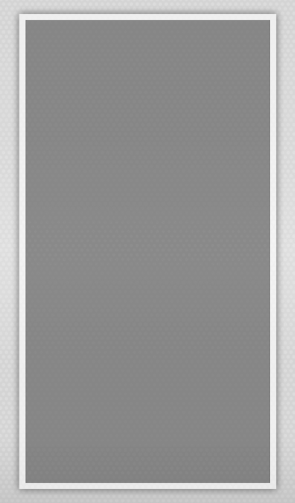

<!--
  This template gets placed in the Pet tab's directive.
  It was wired up in the app config (app.js)
  The 'pets' data comes from its $scope within PetIndexCtrl (controller.js)
-->

<!-- title="{{myTitle}}" -->
<!-- <ion-view  title='Event Info'> -->
<ion-view hide-back-button="true">


  <ion-content scroll="false" has-tabs="false" animation="slide-left-right-ios7">


<!-- <div id='shadow'> -->
  <div id='wholeEventsPage' >

	  	 <button id="unMenu2" class="button button-clear button-icon icon ion-navicon" menu-toggle="'right'">
	  	 </button>

  <!--     <button id="unMenu2" class="button button-clear button-icon icon ion-navicon" ng-click="open_menu()"></button> -->


  	<!--  <div id="unMenu">
      <button class="button button-clear button-icon icon ion-loading-d" ng-click="open_menu()"></button>
     </div> -->

  <!--     // window.fbAsyncInit = function() {
      //   FB.init({
      //     appId      : '1474435556106076',
      //     status     : true,
      //     xfbml      : true
      //   });
      // };

      // (function(d, s, id){
      //    var js, fjs = d.getElementsByTagName(s)[0];
      //    if (d.getElementById(id)) {return;}
      //    js = d.createElement(s); js.id = id;
      //    js.src = "//connect.facebook.net/en_US/all.js";
      //    fjs.parentNode.insertBefore(js, fjs);
      //  }(document, 'script', 'facebook-jssdk')); -->

     	<div id="unLogo">

  		</div>
  	<!-- 	<i id='#unMenu'class="icon ion-beer"></i>
  	</div> -->
	 <!--  <div id='eventBack'> -->
	<!--     -->


	    <ion-list id='eventList'>

	  <!--   <button class="button" ng-click="fbLogin()" id="fb-connect">Connect to facebook</button>
            <p>{{userName}}</p> -->
	    	<scroll style="height:500px">
	    		<ion-refresher
                pulling-text="Pull to refresh..."
                on-refresh="doRefresh()">
        </ion-refresher>

	 				<div ng-repeat="event in events">
	 					<ion-refresher
                pulling-text="Pull to refresh..."
                on-refresh="doRefresh()">
        </ion-refresher>

						 	<!-- <div ng-click="go('#/tab/event/{{event.id}}'')"> -->
						 	<div id='eventWrapper' ng-click="go_here(event.name)">
						    
				 				<h3>{{event.name}}</h3>
				        <p>{{event.location}}</p>
				        <p>{{event.start_time}}</p>
				        <hr size=1 width="87%">
				        <button class="button button-clear button-icon icon ion-android-note">
				        	<!-- <ion-nav-view name="adopt-tab"> -->
				        	<!-- </ion-nav-view> -->
				      	</button>
<!-- <a href="#/tab/event/{{event.id}}"></a> -->

				      </div>


			<!-- 	      </div> -->

	      	</div>

	      </scroll>
	    </ion-list>
	  </div>
	 <!-- </div> -->
  </ion-content>
</ion-view>


